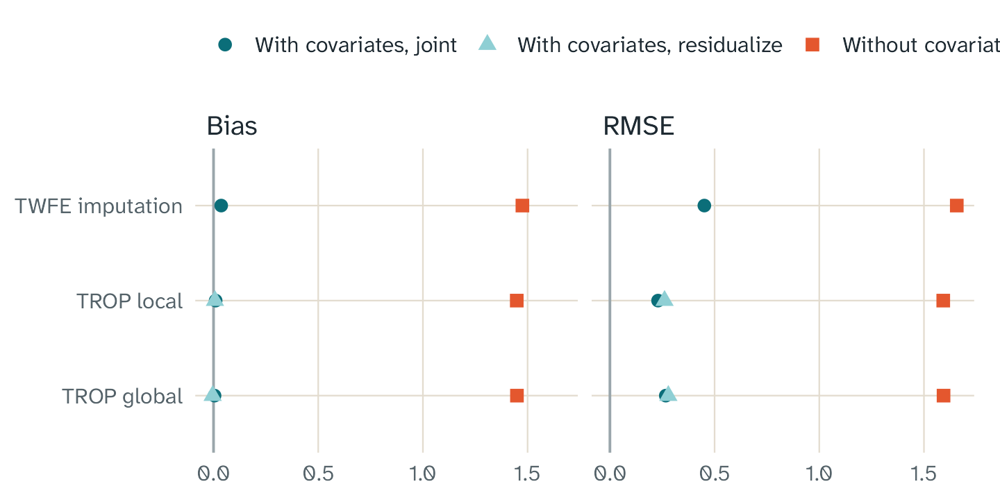

Key points
- A covariate is a variable that can change the outcome, for example
the local unemployment rate. Use the argument
covariatesto add covariates. - Usually, covariates are not necessary for TROP. Its weights and its low-rank term can remove many differences between the units.
- Covariates help when a variable changes the outcomes only after the treatment starts, and the treated units have a larger exposure to it. Then the periods before the treatment do not show the problem.
- In our simulation of this case, TROP without covariates had a bias of 1.45. With covariates, the bias was less than 0.04.
- On test panels, fasttrop and an independent solution agree to 6.7e-09 or better.
When covariates help
TROP compares each treated unit with similar untreated units. It also uses a low-rank term for patterns that units share. These parts use the periods before the treatment. Thus, they can remove a difference that shows in those periods.
A covariate can make a difference that does not show before the treatment. For example, a shock in the economy can start in the same period as the treatment. If the treated units have a larger exposure to the shock, their outcomes change more for a reason that is not the treatment. The weights and the low-rank term cannot find this difference in the earlier periods. If you can measure the exposure, a covariate can remove the bias.
Use only covariates that the treatment does not change. If the treatment changes a covariate, the covariate takes some of the effect of the treatment. Then the estimate is not correct.
The model
Section 6.2 of the paper adds the term to the model of Eq. 13. contains the covariates of unit in period . The vector contains their coefficients. The model also has the unit effects, the period effects, and the low-rank term.
The paper gives the model, but it does not give one procedure to calculate . fasttrop has two procedures:
-
covariate_method = "joint"is the default. Each weighted fit calculates together with the other parts of the model. This is the minimum of Eq. 13. The local method calculates one for each treated cell. -
covariate_method = "residualize"first calculates with one TWFE regression on the untreated cells. Then it removes from the outcomes and uses the result for all other steps. Section 6.2 of the paper tunes the estimator after it removes the covariates. This procedure is one interpretation of that text. Its first step uses all untreated outcomes, also the cells that the cross-validation holds out.
Section 6.2 of the paper adds covariates to the estimator for each treated cell, which is the local method. fasttrop also adds them to the global method. This is an extension of fasttrop. The Python package from the authors has only the global method, and it does not have covariates.
An example
This example adds a covariate to a practice panel. The covariate is 0 before the treatment for all units. After the treatment starts, it increases more for the treated units. The true coefficient is 1, and the true effect is 1.
library(fasttrop)
panel <- trop_simulate(n_units = 40, n_periods = 20, n_treated = 8, n_post = 5,
seed = 1)
treated <- unique(panel$unit[panel$d == 1])
set.seed(2)
exposure <- rnorm(40)
exposure[treated] <- exposure[treated] + 1
panel$x <- exposure[panel$unit] * 1.5 * (panel$time > 15) +
rnorm(nrow(panel), 0, 0.5)
panel$y <- panel$y + panel$x
without <- trop(panel, "y", "d", "unit", "time", method = "global",
se = "none", seed = 1)
with_x <- trop(panel, "y", "d", "unit", "time", method = "global",
se = "none", seed = 1, covariates = "x")
c(without = without$estimate, with_covariate = with_x$estimate)
#> without with_covariate
#> 2.675201 1.202991
with_x$covariates$coef
#> x
#> 1.023062Without the covariate, the estimate includes the effect of the shock.
With the covariate, the estimate is near the true effect of 1. The
element covariates$coef gives
.
For the local method with "joint", it is the mean of the
values for the treated cells.
How we checked the covariates
Agreement with references
The Python package from the authors does not have covariates. Thus, we made two references:
- Reference A is the code of the authors for the global method, with the term added. It uses the conic solver CLARABEL.
- Reference B is an independent solution of Eq. 13 for the local method and the global method. After CLARABEL, it uses more steps to get an accurate minimum.
We used three test panels with two covariates and five sets of fixed tuning parameters. One panel has a staggered design. In another panel, one covariate does not change in time, so the unit effects absorb it.
| Comparison | Reference | Largest difference |
|---|---|---|
| ATT, local method | Reference B | 4.5e-10 |
| ATT, global method | Reference B | 1.9e-10 |
| Coefficients , global method | Reference B | 4.9e-10 |
| ATT, global method | Reference A | 1.2e-06 |
| Coefficients , global method | Reference A | 1.2e-06 |
| Effect of each treated cell, local method | Reference B | 6.7e-09 |
Coefficients
,
procedure "residualize", both methods |
A TWFE regression in Python | 9.3e-15 |
The differences from reference B are near the limit of the
arithmetic. The differences from reference A are larger because CLARABEL
is less accurate. The tests in
tests/testthat/test-oracle-covariates.R make sure of these
results with each change to the code.
A simulation with a known effect
The simulation has 200 panels with 40 units and 16 periods. Ten units get the treatment in the last 4 periods. The true effect is 1.
The untreated outcomes have unit effects, period effects, two
factors, noise, and the term
with
.
The covariate is 0 before the treatment, except for noise. In the last 4
periods, it increases with the exposure of each unit. The treated units
have a larger exposure. The script
inst/validation/covariates.R has the details.

The bias and the RMSE of each method without covariates and with covariates. The true effect is 1. Each estimate uses the same 200 panels.
| Method | Bias (Monte Carlo SE) | RMSE | Coverage, normal interval | Mean of phi | |
|---|---|---|---|---|---|
| twfe | TWFE imputation | 1.475 (0.053) | 1.657 | 0.400 | |
| twfe_joint | TWFE imputation, covariates | 0.037 (0.032) | 0.451 | 0.910 | 0.997 |
| local | TROP local | 1.448 (0.047) | 1.592 | 0.365 | |
| local_joint | TROP local, joint | 0.010 (0.016) | 0.230 | 0.960 | 0.996 |
| local_resid | TROP local, residualize | 0.007 (0.018) | 0.261 | 0.965 | 0.997 |
| global | TROP global | 1.449 (0.047) | 1.594 | 0.365 | |
| global_joint | TROP global, joint | 0.005 (0.019) | 0.267 | 0.910 | 0.995 |
| global_resid | TROP global, residualize | -0.004 (0.020) | 0.279 | 0.930 | 0.997 |
Without covariates, all three methods have a large bias. The pre-periods do not show the shock, so the weights cannot remove it. With covariates, the bias of each method is less than two Monte Carlo standard errors. The mean of is near the true value of 1.
With covariates, TROP local with "joint" had an RMSE of
0.230. TWFE imputation with covariates had an RMSE of 0.451. TROP also
uses its weights and its low-rank term for the two factors.
The coverage of the normal interval of TROP local is near 95%. The
coverage of TWFE imputation with covariates is 0.910. The coverage of
TROP global with "joint" is 0.910. These values are
approximately two Monte Carlo standard errors less than 95%. The panels
have only 10 treated units. The paper says that the bootstrap is correct
only with many treated units.
The two procedures gave similar results in this simulation. This result applies only to this simulation.
A spot check with Stata
The Stata package trop from gorgeousfish/TROP also has
covariates. The folder inst/validation/stata has a do-file
and an R script that compare the two packages on the test panels. The
scripts only call the Stata package. They do not contain code from it.
The file README.md in that folder gives the steps.
The time cost of covariates
The joint procedure adds the covariates to each weighted fit. The table gives the time of one fit with fixed tuning parameters and no bootstrap, with 8 threads. Times depend on the computer.
| Panel | Method | Covariates | Time (s) | Ratio to no covariates |
|---|---|---|---|---|
| 100 x 30 | global | 0 | 0.136 | 1.00 |
| 100 x 30 | global | 2 | 0.181 | 1.33 |
| 100 x 30 | global | 5 | 0.233 | 1.71 |
| 100 x 30 | local | 0 | 2.700 | 1.00 |
| 100 x 30 | local | 2 | 2.390 | 0.89 |
| 100 x 30 | local | 5 | 3.060 | 1.13 |
| 400 x 50 | global | 0 | 2.610 | 1.00 |
| 400 x 50 | global | 2 | 2.450 | 0.94 |
| 400 x 50 | global | 5 | 2.610 | 1.00 |
| 400 x 50 | local | 0 | 240.000 | 1.00 |
| 400 x 50 | local | 2 | 148.000 | 0.62 |
| 400 x 50 | local | 5 | 189.000 | 0.79 |
The file inst/bench/covariate_timings.R makes this
table.
The global times are the median of 3 runs. The local times for the 400 x 50 panel are from 1 run only. Some ratios are less than 1. The solver iterations change with the data, and the times of one run change from run to run. Thus, these ratios do not show that covariates make a fit faster. They show that the cost of the covariates is small compared to the cost of the fit.
Good practice
- Use covariates only when you have a reason. A covariate with no effect adds noise to the estimate.
- Use only covariates that the treatment does not change.
- The fixed effects absorb a covariate that does not change in time. fasttrop gives a warning message for such a covariate and does not use it.
- Compare the estimates without covariates and with covariates. A large change shows that a covariate is important. Then, examine the reason.
- The appendix of the paper gives a bias bound with covariates. The bound has an extra term: the imbalance of the covariates times the error in . Thus, the weights do not remove the bias from a wrong .